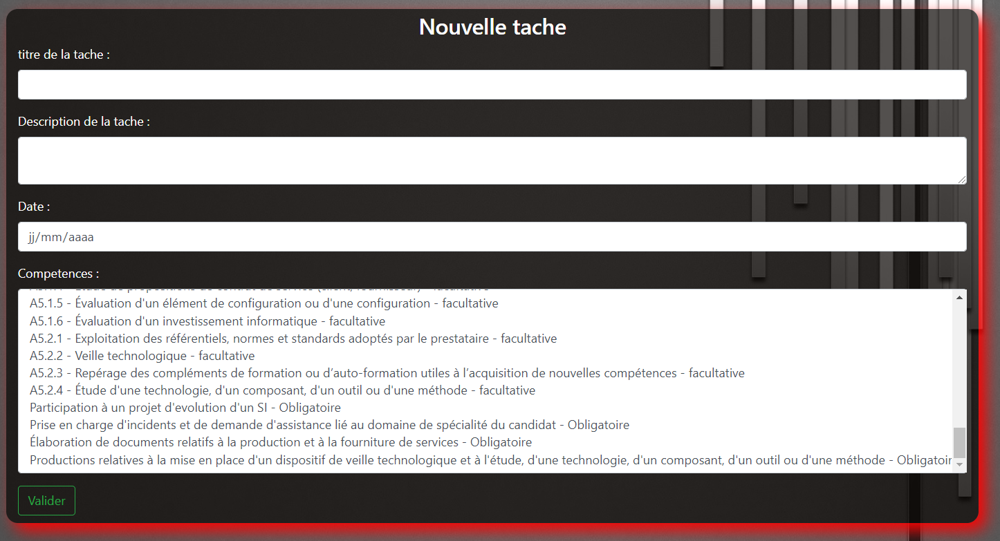
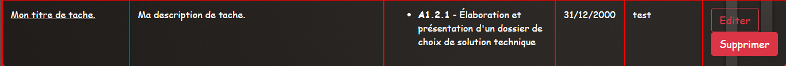

Tache¶
Création d’une tache¶
Vous devez être connecté afin de pouvoir créer une tâche.
Sur la page d’accueil, il sera possible de créer sur “Nouvelle tâche”. Vous serez alors rediriger vers un formulaire permettant d’entrer les différentes informations de la nouvelle tâche.
Il est nécessaire de rentrer toutes les informations de la tâche, hormis la sélection des compétences qui est facultative.
- Le titre de la tâche désigne l’intitulé de la tâche.
- La description de la tâche désigne la description détaillée de la tâche.
- La date est la date de la tâche
- La liste de compétences est la/les compétence(s) que la tâche à validé, il est possible d’en sélectionner plusieurs avec la touche CTRL
Le bouton “valider” sert à enregistrer la tâche.
Lister les taches¶
Vous devez être connecté pour pouvoir lister les tâches.
En tant qu’Utilisateur, vous ne pourrez lister que vos propres tâches.
En tant qu’administrateur, il sera possible de voir l’ensemble des tâches présentes.
En tant que tuteur, il vous sera possible de lister les tâche de votre apprentis.
Sur la page d’acceuil :
- “Vos tâches effectuées” vous permettra de lister vos différentes tâches saisie au préalable.
- “Liste des tâches global” permet de lister toutes les tâches saisie par tous les utilisateurs. Cette fonction n’est disponible que pour les administrateur”.
- “Taches de l’apprenti” permet de lister les différentes tâches saisie par l’utilisateur déclaré en tant qu’apprenti pour un tuteur. Cette fonction n’est disponible que pour les tuteurs.
Edition d’une tache¶
Pour éditer une tâche, vous devez être dans la liste des tâches.
Un tuteur ne peut pas modifier de tâches
Un administrateur peut modifier n’importe quelle tâches”
Lors du clique sur le bouton “éditer” d’une tâche, le formulaire de modification de la tâches s’affichera.
Après cela, le formulaire d’édition de la tâche va être affiché.
Les données affichées sur le dessus sont les données de la tâche actuellement.
Les données sont également inscrites dans les zones d’éditions du bas, mais celle-ci sont éditable.

Le bouton “Valider” enregistrera les modifications apportées a la tâche.
Suppression d’une tache¶
Pour supprimer une tâche, vous devez être dans la liste des tâches.
Un tuteur ne peut pas supprimer de tâches
Un administrateur peut supprimer n’importe quelle tâches”
Lors du clique sur le bouton “Supprimer”, un message apparaîtra a l’écran afin de confirmer la suppression de cette tâche.